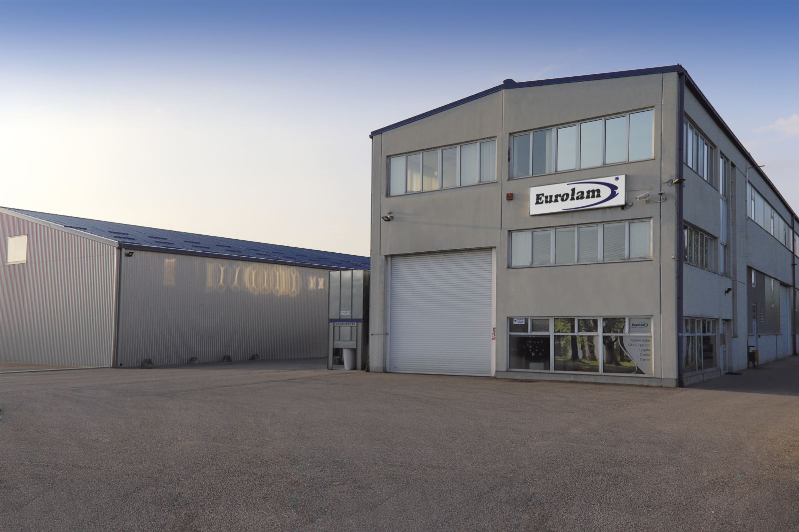

Tvrtka Eurolam osnovana je 20. prosinca 1993. godine. Sjedište tvrtke je u Rakitju (Zagreb), Voćarska 6b, gdje se nalazi i skladišno prodajni prostor. U Republici Hrvatskoj Eurolam se potvrdio kao tvrtka koja nudi visoko kvalitetne proizvode koji zadovoljavaju najstrože standarde, kako funkcionalne, tako i estetske. Tvrtka Eurolam jedan je od najjačih hrvatskih zastupnika eminentnih europskih i svjetskih brandova s područja izrade namještaja i opremanja doma, te unutarnje stolarije (vrata, dovratnici, opšavne i laminatne letvice). "Hranipex", "Jowat", "Riepe", "GTV", "Sirca", “Kastamonu“, "Unionplast“, “Interceramic“, “Salice“, "Kunex", "Lesna", "Classen" itd. Otvoren je i dućan u prodajno skladišnom centru u Rakitju, gdje možete pronaći sve za proizvodnju namještaja na jednom mjestu. Osim trgovine pokrenuli smo vlastitu proizvodnju furnirane rubne trake, te uslugu širinskog i dužinskog spajanja furnira. Proizvodnja je opremljena novim specijaliziranim strojevima kako bi artikli iz naše proizvodnje zadovoljavali i najstrože standarde. Isto tako posjedujemo FSC® certifikat za furnir koji koristimo u proizvodnji. Jasno definirana strategija pokazala je uspješnost poslovanja tvrtke Eurolam. Provođenje poslovne strategije u djelo jest ponuditi vrhunsku uslugu i kvalitetu, te potpunu podršku svim klijentima.
